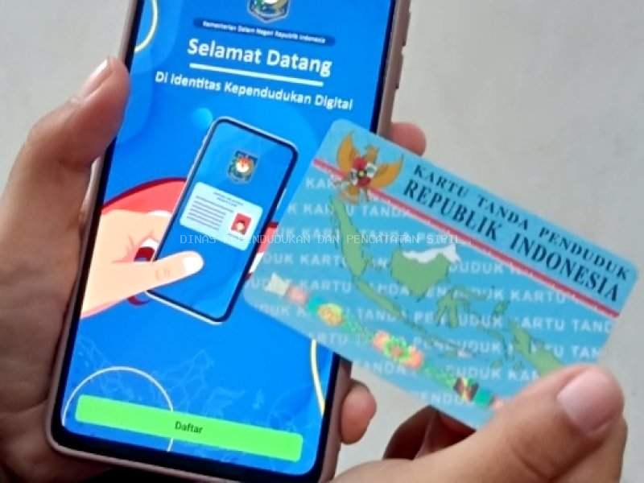

KTP Elektronik
Identitas resmi penduduk. Perekaman dilakukan di kantor atau UPT.
Lihat layananKenali jenis layanan, siapkan berkas dengan benar, dan temukan jawaban pertanyaan umum sebelum datang ke kantor.

Enam layanan yang paling sering dibutuhkan warga.
Identitas resmi penduduk. Perekaman dilakukan di kantor atau UPT.
Lihat layananData susunan keluarga: pembuatan baru dan perubahan data.
Lihat layananBukti resmi peristiwa kelahiran seorang anak.
Lihat layananPencatatan resmi peristiwa kematian anggota keluarga.
Lihat layananPindah keluar dan pindah masuk wilayah.
Lihat layananKTP-el versi digital di smartphone.
Lihat layananGambaran umum langkah yang biasanya ditempuh warga.
Cek persyaratan sesuai jenis layanan dan siapkan dokumen asli.
Lewat aplikasi daring untuk layanan tertentu, atau datang langsung ke kantor.
Petugas memeriksa kelengkapan dan kebenaran berkas.
Dokumen yang sudah jadi diambil sesuai informasi dari petugas.
Aplikasi kependudukan dari Disdukcapil Kabupaten Cilacap untuk mengajukan layanan secara daring. Berdasarkan pemberitaan peluncurannya pada Januari 2024, layanan yang dapat diajukan meliputi perubahan data, pindah masuk, pindah keluar, akta kelahiran, dan akta kematian.
Informasi dapat berubah. Pastikan melalui kanal resmi Disdukcapil Cilacap.
Informasi terbaru dari Disdukcapil Cilacap.
Cilacap – Warga Bercahaya, yuh pada Nobar Timnas Piala AFF U23! Rame-rame kabeh sedulur nang Alun-a…
Januari 2024
Baca berita

Disdukcapil Cilacap membentuk kantor UPT di lima kecamatan untuk mendekatkan layanan e-KTP, Kartu Keluarga, dan akta kelahiran (informasi berita tahun 2018).
Konfirmasi lokasi dan jam layanan terbaru ke kantor sebelum berkunjung.